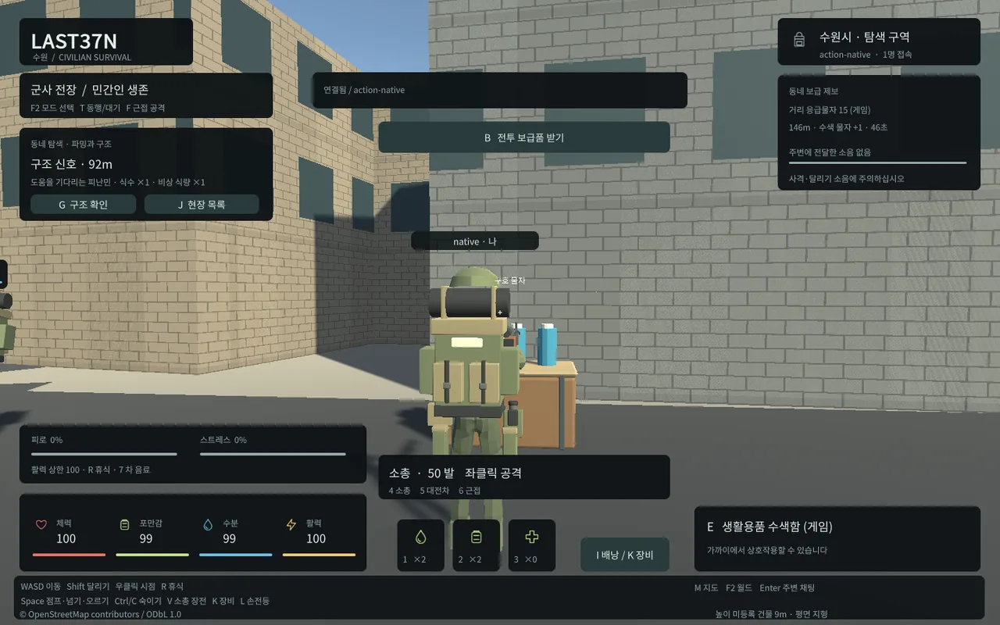
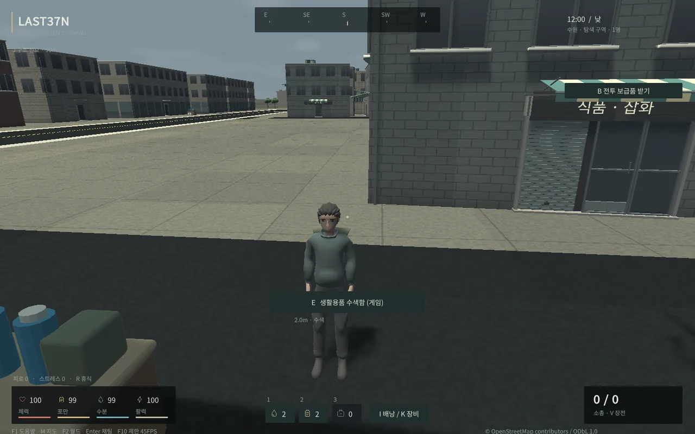
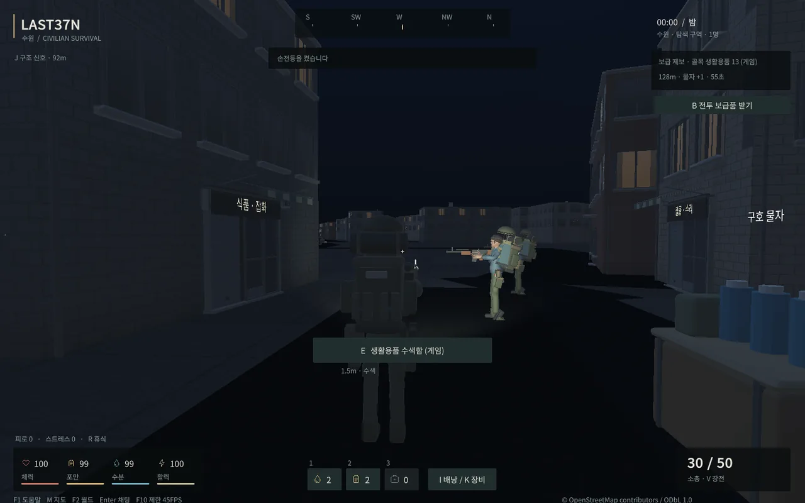
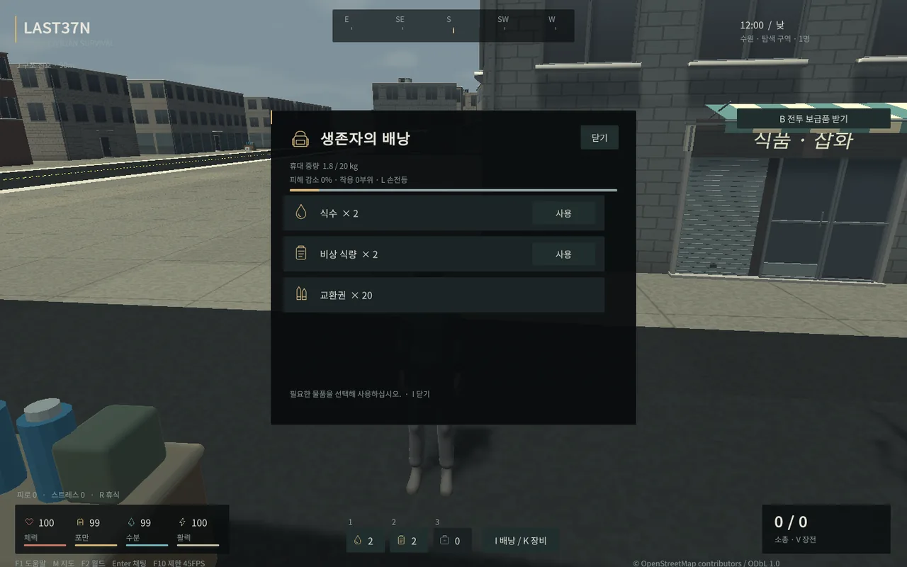
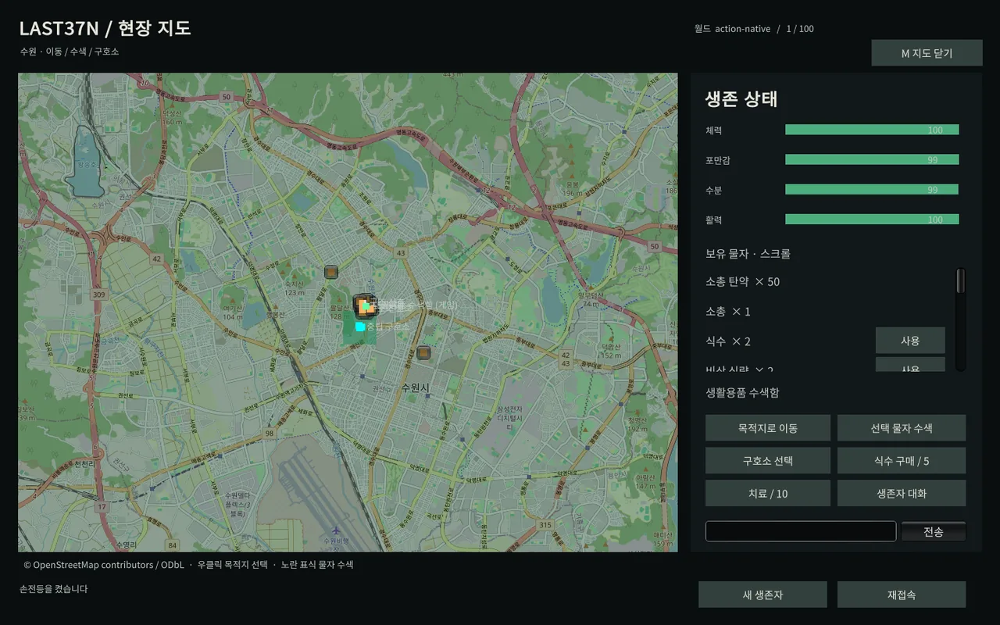
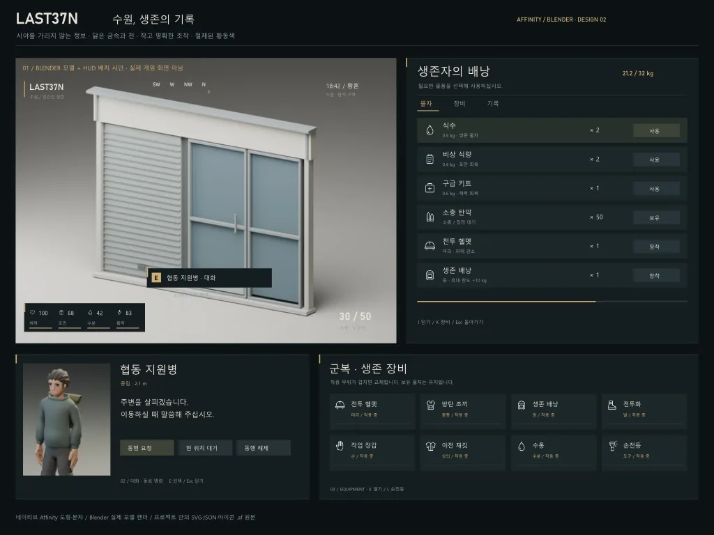
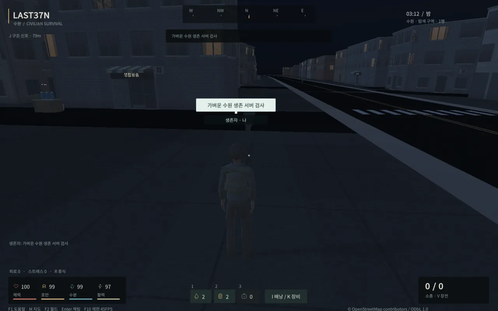

Tracefolio REPORTS & ISSUES
Tracefolio REPORTS & ISSUESLAST37N 플레이 품질 재작업: 실제 Affinity·Blender 원본과 적용 검증
완료기본8788에 UI·캐릭터/장비·상가·낮밤·관통/상호작용 개선을 적용했습니다. 전체 배포6732743바이트로 상한을 낮췄습니다.
작업 결과
게임 적용·검증과 공개 보고서 확인 완료.
변경 내용
적용 내용
실제 게임 전후

이전 실제 Chrome 화면: 넓은 HUD와 기존 외형

최종 실제 게임: 민간인 기본 외형·작은 HUD·Blender 상가 모듈

최종 실제 게임: 서버 시각 기반 밤과 손전등

최종 실제 게임: 배낭과 아이콘

최종 실제 게임: 수원 지도·생존/물자·스크롤 패널
실제 제작 원본
Affinity3.3.1.4940에서16벡터 아이콘을 제작하고 게임 PNG에 적용했습니다. 두 번째 시안은166단계를 실제 실행해 렌더했습니다. 아래 이미지는 디자인 시안이며 게임 실행 화면이 아닙니다. 편집 가능한 SVG·JSON과 기존 UI/아이콘 AF는 프로젝트 art/ui/overhaul에 보존했습니다. 새 시안 AF 추가 저장은 SDK 프로젝트 경로 권한 거부·GUI 자동 승인 차단으로 미실행입니다.

실제 Affinity 렌더 — 디자인 시안, 실제 게임 화면 아님
Blender5.2.3 LTS로 캐릭터 표면/머리·호흡/보행·11장비·상가/도시 소품을 수정하고 BLEND 원본을 프로젝트 art에 보존했습니다. 근거리 정점14696→6239, 최종 원거리2374입니다.14클립과 리그를 유지했습니다. 닫힌 상가 문은 외장 장식입니다.
HUD·지도·월드·배낭·장비·NPC·도움말, 서버 기준48분 낮밤, 지면/건물 셰이더, 사람/NPC/시설/건물 외장/전차 충돌과 이동 중 사용을 수정했습니다. 기존 기능과 지도 데이터는 유지했습니다.
바탕화면 정리와 교훈
임시 저장에 사용했던 이번 작업 파일5개를 프로젝트 원본과 SHA-256 대조한 뒤 바탕화면에서 정리했습니다. 다른 파일은 건드리지 않았습니다. 이후 Affinity는 공식 RGBA 메모리 API와 프로젝트 출력 경로만 사용합니다. 기존 전역의 프로젝트 보관·바탕화면 금지 지침을 확인했으며 중복 규칙을 추가하지 않았습니다. PowerShell JSON DateTime 검증 교훈은 전역에 통합해 fbcda77로 푸시했고 설치본/설정 저장소 일치를 확인했습니다. 다른 세션의 자동 반영은 주장하지 않습니다.
검증
같은 조건의 실제 성능
| 지표 | 이전 | 최종 |
|---|---|---|
| Unity FPS | 120.0 | 44.8 |
| CPU 정지/이동(1논리코어=100%) | 164.6 / 156.8% | 65.6 / 63.9% |
| 게임 렌더러 private MiB 정지/이동 | 204.4 / 207.8 | 180.2 / 181.0 |
| WASM 힙 MiB | 95.81 | 72.00 |
| Unity 추적 할당 MiB | 38.60 | 35.08 |
같은 PC·Chrome·1440×900·QA 월드. CPU는 논리 코어 하나=100%. rAF와 Unity FPS 구분. 기본 FPS 약120→45·지도 범위520→460m 변경 포함. 전체 브라우저 private bytes는 사용자 Chrome 탭 RAM 표시와 별도 지표. 기본45FPS이며 F10으로30/45/60을 전환할 수 있습니다. 프레임 상한·렌더 범위 변경을 포함한 실제 결과이며 손실 없는 FPS 향상으로 해석하지 않습니다. 사용자 작업 관리자와 동일 지표가 아니므로 탭 메모리가 같은 비율로 감소한다고 보장하지 않습니다.
서버131검사·도구17검사, 최종 실제Chrome 행동14/장비9/구조20/도시10/전투14·시각/UI29 검사를 통과했습니다.252실루엣 최소IoU0.96651268·포즈 오차0·마스크 다리0/팔54입니다. Native 행동23과 상체 장전/보행 대조도 통과했습니다.
100WS 연결·80이동·10재접속·9900명령·900확인응답, p95 129.5ms·오류0.5분16회 월드 방문·5재접속에서 월드별 메시/재질 수가 안정적이었습니다.100개의 독립 Unity 렌더 시험은 아닙니다.
초기6730869바이트·전체6732743바이트·5파일, 이전보다15193바이트 감소. 콘텐츠 지문 03f6a7831182cc90a83bf4ae4a7586fc3f3dfda07c1da4fca51a02af65ddc035. 압축 해제 해시 동일성을 확인했고 기본8788의 실제13검사와1바이트 증가 거부를 통과했습니다. 정상 서버 재시작 후 캐릭터·월드·아이템·장비·좌표가 유지됐습니다.

기본8788 적용 후 실제 게임 구동·콘텐츠 검사 화면
남은 사항
저용량 스타일의 프로토타입입니다. 사진 수준 실사·건물 내부·고급 길찾기·밤 전용 전술 AI는 제공하지 않습니다. 모바일/저사양과100대 Unity 렌더는 미검증입니다.48분 주기·경제 수치는 임시값입니다. FPS60의 안정 유지도 보장하지 않습니다.
새 시안 AF 추가 저장은 미실행이며 SVG·JSON·기존 AF 원본을 보존했습니다. 자동 승인 검토가 GUI 저장을 거부한 이유는 접근성 대상 정보 부재와 다른 창의 가림이었고, 해당 GUI 입력은 실행하지 않았습니다.
앞선 공개 보고서의 Actions 성공과 공개 HTML/이미지/목록을 실제 확인했습니다. 이 최종 버전의 게시 검증 결과도 별도 실행 기록에 보존합니다.
작업 시간
- 제안 시간: 2~4시간. 시작2026-10-31 16:08:47 KST.
- 실제로 완료된 시간: 게임 실제 적용18:42:10 KST·실행 QA18:42:25 KST. 보고서 마무리 2026-10-31 18:46:34 KST, 시작부터 약158분. 최종 게시 확인 시각은 배포 검증 기록과 채팅에 별도로 표시합니다.
- XERJ: 미사용 — XERJ 도구 미제공, rg·현재 소스·실제 실행으로 대체